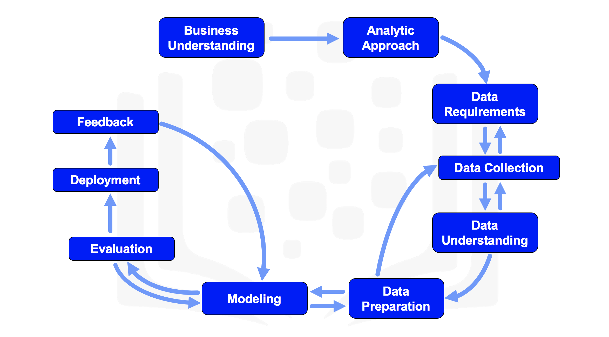

Data Science Methodology
Data Science for Mathematicians
Learning Objectives
In this course you will learn about:
- The major steps involved in tackling a data science problem.
- The major steps involved in practicing data science, from forming a concrete business or research problem, to collecting and analyzing data, to building a model, and understanding the feedback after model deployment.
- How data scientists think through tackling interesting real-world examples.
Data Science Methodology
